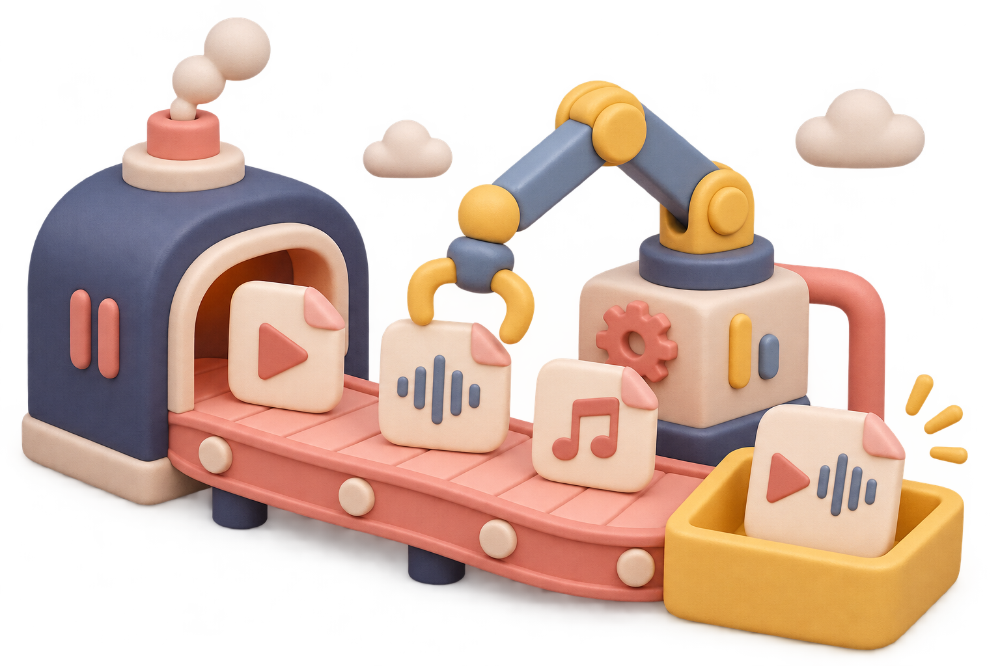

Private by design.
Your media stays on your computer.
Conversion works without the cloud.
A LITTLE CHANGE. A LOT OF POSSIBILITY.
Give your video and audio a new beginning.
Choose your files. We’ll handle the conversion.
No uploads. No account. All yours.

A fresh format. Same great content.Your media stays on your computer.
Conversion works without the cloud.
13 output formats for video and audio.
From MP4 to MP3, and beyond.
Outputs save beside your originals.
Existing files are kept safe.
READY FOR SOMETHING NEW?
Add your media above, or drop a folder into the window.
Your originals stay original. Converted files use a new name, with a number added if the output already exists. Subfolders are included.
CONVERT TO MP4
QUALITY
High quality, with a little more room to breathe.
Choose a format, add your media, and you’re ready.
Add files or a folder from your computer.
Choose your output and quality. We’ll do the rest.
Click Convert. Your results save beside the originals.